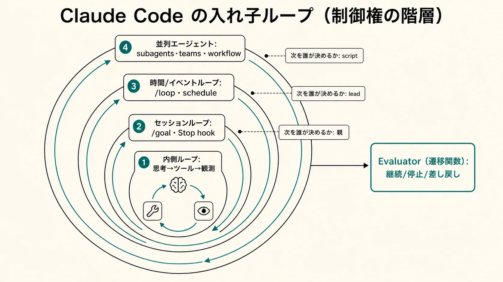
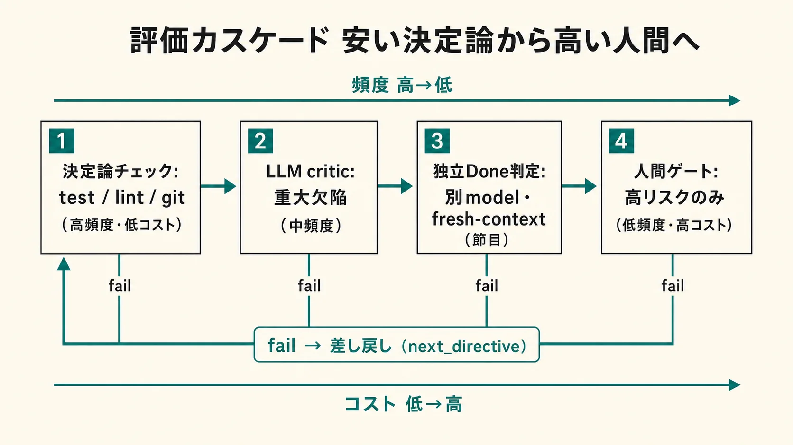
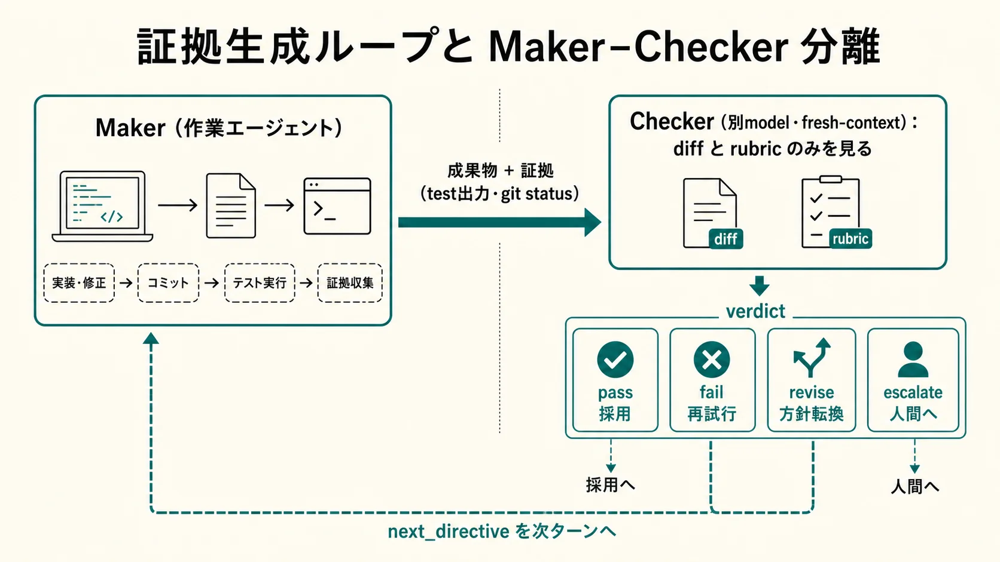
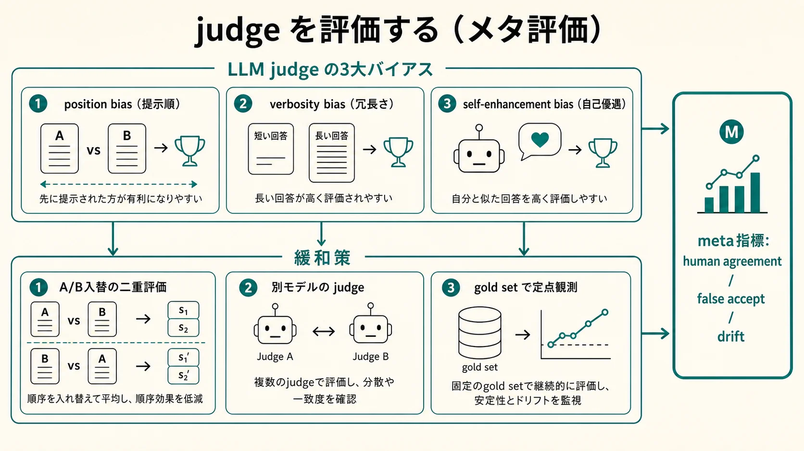
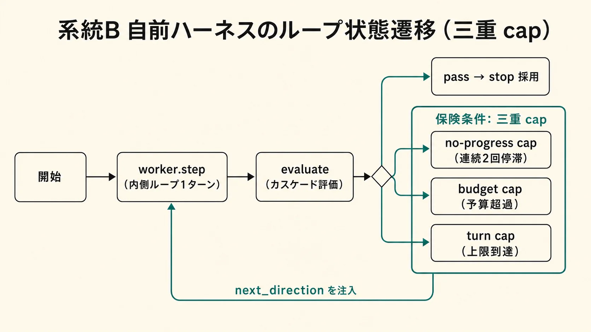

1. ループとは — 証拠生成ループ
作業定義: ループエンジニアリングとは、AIに一回よいプロンプトを書く技術ではなく、AIが自律的に観測し、行動し、検証し、未達なら次の手を選び続ける反復構造そのものを設計する技術である。実務上の結論は「良いループは作業ループではなく証拠生成ループである」という一点に集約される。
完了条件は、会話内証拠または環境上の結果として実証できなければならない。Evaluatorは感想を述べる役ではなく、継続、停止、差し戻し、採用、棄却を決める遷移関数である。判定が「No」を返すこと自体が、次ターンの指令になる。
「Loop Engineering」「内側ループ／外側ループ」はAnthropicのAPIやドキュメントに明示定義があるわけではなく、公式仕様と学術文献を統合した分析上の定義である未確認（用語の厳密な起源・固定定義は流動的）。一方で、Claude Codeのagentic loop、/goal、/loop、Stop hook、subagents、agent teams、dynamic workflows、Agent SDK、OpenTelemetryは、事実上この設計空間を構成している確認済み（公式 docs）。Anthropic自身もClaude Codeをモデルではなく「agentic harness」と呼ぶ。
ループは一層ではなく多層
02章は micro / meso / macro / meta の4階層、03章（deep dive）は inner-tool / session-turn / schedule-event / parallel-agent / meta の5層に分解する。Evaluator配置の観点では次の4層に束ねると扱いやすい。内側ループの改善だけでは長時間安定運用は得られず、外側ループとメタループまで設計しないと、早すぎる完了宣言とコンテキストドリフトを防げない。
| ループ層 | 意味 | 代表サーフェス | 停止条件 |
|---|
| micro（マイクロ） | 単一ツール、単一検査 | tool call、PreToolUse、PostToolUse | 成功、拒否、失敗 |
| meso（メゾ） | 1ターン内の観測、行動、検証（内側ループ） | agentic loop、ReAct風turn | turn完了、max tokens |
| macro（マクロ） | セッションやワークフローの継続（外側ループ） | /goal、/loop、Stop hook、teams | 成果、時間、予算、no-progress |
| meta（メタ） | ループ設計そのものの改善 | eval suite、rubric更新、policy tuning | 指標改善の鈍化、ガバナンス判断 |
2. Claude Code のループ面
Claude Codeの内側ループは「コンテキスト収集 → アクション実行 → 結果検証」を回す turn-level の実行ループである確認済み。その外側に、いつ・誰が再起動するかを定める層が乗る。並列面は「次遷移を誰が決めるか」で分かれ、内側/外側の区別は時間スケールだけでなく制御権の階層でもある。

図1. ループは一つではなく、制御権が異なる複数の閉ループが入れ子で存在する。内側から外側へ、次遷移の決定主体は「親 → lead → script」と移る。Evaluatorのverdictは、その決定主体に届いて初めて遷移関数として働く。
/goal（条件収束型）
成果条件駆動。各ターン後にfresh evaluator（既定はHaiku系の小型高速モデル）が会話上の証拠だけで完了を判定し、未達理由を次ターンのガイダンスにする確認済み。実装、テスト収束、backlog消化に向く。/goalは prompt-based Stop hook のセッション限定ラッパーで、評価器はツールを呼べない。条件本文は最大4,000文字、trusted workspace 必須で disableAllHooks / allowManagedHooksOnly 下では使えない。
/loop（時間駆動型）
時間駆動。固定間隔ではcronに変換され最小1分、間隔省略時はClaudeが1分〜1時間で自己ペースを決め、場合によってはMonitor toolでポーリング自体を避ける確認済み。CI監視、PR見守り、deploy待ち、定期保守に向く。EvaluatorそのものではなくL3の非同期トリガとして扱う。固定間隔ループは停止操作か7日で失効。bare /loop は loop.md（25,000 byte超で切り捨て）を使う。
Stop hook（汎用停止判定）
任意の判定器をturn終端へ差し込む汎用機構で、/goal はその特化形。prompt型は軽量（tool-less）、agent型は実ファイルやコマンドを見られる重量版。hookは shell command・HTTP・prompt・agent・MCP tool の5種を発火でき、PreToolUseで遮断、PostToolUseで追記、Stopで継続/停止を判定できる確認済み。
subagents（サブエージェント）
親が次遷移を決める軽量委譲。調査、レビュー、反証など副作用の少ない仕事に向く。独立コンテキストで進み、結果は要約返信なので、証拠参照を明示させる確認済み。worktree隔離が使える。
agent teams（協調）
shared task listとmailboxを持つpeerセッション群。leadが評価結果を集約しタスク状態を更新する。teammateごとのworktree隔離は基本ではないため、別ファイル所有権で分割する。依存が強い作業では競合とコストが増える。experimental な機能を含む確認済み（experimental）。
dynamic workflows
計画をJavaScript artifactへ移し、scriptが次遷移を決める。多票、敵対検証、大規模監査など再実行性・監査性が要る場面で強い。同時16 agent・総計1,000 agent/run の制約がある。mid-run input 不可確認済み。
同期と非同期: /goal・Stop hook・foreground subagent は同期ループ（品質統制が強いが待ち時間とコストが増える）。/loop・background subagent・workflow background は非同期ループ（スループットは高いが孤児タスク・ログ散逸・競合のリスク）。安全ゲートは同期層に置き、監視・記録は非同期層に置く。
design/ パッケージの統合ビューはこちら →
3. Evaluator 中心設計 — cheap→expensive カスケード
Evaluatorは「出力が良いか」を見るだけではない。ループの次遷移を決める関数であり、判定がNoを返すと、その理由が次ターンの指令になる。したがってEvaluator設計は採点プロンプトの問題ではなく、証拠、Verdict、差し戻し先、停止保険の設計である。単一の万能judgeを置くと、安すぎて素通りするか、高すぎてコストが暴走するかのどちらかになる。

図2. 頻度・粒度・コスト・ブロック権を層ごとに分け、安い決定論で落ちるものをLLM judgeへ回さない。決定論で白黒つく領域にLLM judgeを投入しないのが、信頼性とコストを同時に満たす配置原則。security-guidance plugin の3層（編集時 pattern-check → ターン末 model-review → commit/push 時 agentic-review）がこのカスケードの実例確認済み。
層ごとに証拠・ブロック権・同期性を変える
| 層 | Claude Code サーフェス | 証拠（何を見るか） | ブロック権 | 確信度 |
|---|
| L1 micro | PreToolUse / PostToolUse hook（決定論） | tool引数・生出力（exit code, diff, match） | deny/allow（同期必須） | 確認済み |
| L2 meso | prompt Stop hook / /goal（tool-less） | transcriptに surface された証拠のみ | soft（guidance追記） | 確認済み |
| L3 macro | agent Stop hook / reviewer subagent / workflow | environment outcome（test exit, git状態, 実ファイル） | 停止・採用/棄却 | capability確認済み |
| L4 meta | meta-evaluator（run横断） | 複数trial集計（成功率, no-progress率, judge一致率） | ガバナンス | 確認済み |
未確認の数値に依存しない: agent hook のターン数上限「最大50 tool-use turns」は未確認・要実機確認（公式 hooks docs に記述が見当たらない）。Stop hook が「連続8回ブロックで上書きされる」という整理も未確認。これらの数値に依存せず、ブロック層とは別に turn / budget / no-progress の各capを必ず置く。
証拠モデル: 完了は「証明」に落とす
最重要の制約は、判定は証拠の上でしか行えない点。tool-lessな /goal 評価器は会話に現れた証拠だけで yes/no を返すため、「レビューを片付ける」ではなく「npm test が exit 0、git status が clean」のように、worker自身がtranscriptに痕跡を残せる条件へ翻訳する確認済み。決定論的outcomeを第一級に置き、LLM判断は決定論で割り切れない残差にだけ使う。
| 証拠クラス | 取得方法 | 信頼度 | 適する判定 |
|---|
| 決定論チェック | test exit code / lint / 型 / git status --porcelain / diff境界 | 最高（再現可能） | 完了・回帰・境界逸脱 |
| environment outcome | HTTP 200 / DB行数 / 生成物mtime / migration済み | 高（外部実測） | デプロイ・副作用の実在 |
| 会話内観測 | transcriptに載ったコマンド出力・ログ | 中（自己申告混入） | tool-less評価器（/goal）の唯一の入力 |
| LLM critic判断 | 別モデルの批評 | 低〜中（バイアスあり） | 設計妥当性・可読性など非機械的品質 |
Evaluatorの分類・配置の統合ビューはこちら →
4. 4値 verdict と Maker–Checker 分離
判定器を「ループの遷移関数」として実装するなら、まず入出力契約を固定する。契約が曖昧なままプロンプトを磨いても、継続/停止/採用/棄却の分岐がtranscript上で再現できず、ハーネスは「賢い無駄働き」に陥る。

図3. 作業者本人に完了を採点させない。Checkerにはdiffとacceptance criteria（rubric）だけを見せ、実装者の思考過程・弁明・改善履歴は渡さない。狙いを渡すとjudgeが作業者の意図に同調し批判性が落ちる。/goalが作業モデルとは別の小型モデルで判定するのは、この構造的な自己承認回避のソフトウェア工学版確認済み。
4値 status を分ける
status を4値にするのが実装上の要点。pass（停止・採用）/ fail（同一方針で再試行）/ revise（方針転換を指示）/ escalate（人間または上位ループへ委譲）を分けると、no-progress capと人間ゲートが自然に接続する。reason と evidence_refs を必須にすることで、「なぜ止めた/続けたか」が後から追える operation ledger になる。
type Verdict = {
status: "pass" | "fail" | "revise" | "escalate"
reason: string // なぜその判定か（1〜3文）
next_directive?: string // fail/revise 時に worker へ渡す次ターンの明示指令
score?: number // 0..1（任意。比較・トレンド監視用）
evidence_refs: string[] // 判定根拠へのポインタ（trace id / path / テスト名）
}
良い next_directive は「何が未達か」ではなく「次に何をどの順で試すか」を1つ示す。例: reason=「test_login.py が2件失敗」→ next_directive=「まず期限計算を修正し、npm test -- test/auth を再実行して結果を会話に残せ」。曖昧な「改善して」ではなく、証拠に接続した具体指令にする。
構造化出力で verdict を機械可読にする
verdictを正規表現抽出すると壊れる。schema第一で受け取る。Claudeの構造化出力は output_config.format（type: "json_schema"）で指定する確認済み（2026-07-04 に現行 Anthropic API docs のリクエスト例と照合）。status を enum に固定し reason / evidence_refs を required にするだけで、ループ側は分岐と監査を型で扱える。
rubricは3点で書く: measurable end state（1つの終状態）/ proof（どう証明するか）/ constraints（守る制約・触れない範囲・予算・安全境界）。曖昧done（「いい感じに」）、evaluator blindness（tool-less評価器に「実際に動くこと」を求める）、metric monoculture（単一スコア最適化＝reward hacking）の3アンチパターンを避ける。
5. judge の信頼性・3大バイアス・メタ評価
Evaluatorを置けば品質が保証される、というのは誤り。judge自身がバイアスを持ち、時間とともに壊れ（drift）、報酬ハッキングの標的になる。ハーネスの信頼性は、判定器を導入したかではなく、判定器を継続的に点検する層（メタ評価）を常設できるかで決まる。MT-BenchとChatbot Arenaは、強いjudgeが人間判断と80%以上で整合しうる一方、系統的なバイアスを持つことを示した確認済み（一次研究由来）。

図4. 3大バイアスと既定の緩和策。position biasはA/B入替の二重評価（両方向で同じ勝者のときだけ採用、不一致はtie）、verbosity biasはrubricで長さを評価軸から外す、self-enhancement biasは作業モデルと別モデル/別プロバイダのjudgeにする。総則は「絶対スコアよりpairwise ranking」「rubricを固定し実行ごとに変えない」。
meta-evaluator: judge の定期点検
gold set（人間が確定ラベルを付けた少数の検証セット、数十件で足りる）を定期的にjudgeへ流し、以下を再計測する。この点検自体を時間駆動ループ（/loop や scheduled task）に載せ、閾値割れを検知したらjudgeをrubric再調整または降格（LLM判定から決定論チェックの補助へ格下げ）する。
| 指標 | 何を測るか | 合格ラインの考え方 |
|---|
| human agreement | 人間ラベルとの一致率 | 高リスク判定は0.9+、境界判定は0.8+ |
| inter-run consistency | 同一入力の再現性 | 逸脱が閾値超なら temperature を下げるか多数決化 |
| calibration (ECE) | 確信度と実正答率の対応 | 過信（高確信で外す）を特に警戒 |
| false accept / false reject | 見逃し / 過検出 | false accept（不良を通す）をより重く扱う |
| drift | 上記の時系列劣化 | モデル更新・プロンプト変更・分布シフトでアラート |
敵対的検証と Goodhart 防御
単一judgeをN回回す多数決は、同一モデルの共通バイアスを打ち消せない。異なるレンズ（correctness / security / reproducibility）の懐疑者を並べて多票化し、「全レンズ合格で採用、一つでもfailなら差し戻し」を既定にする（false acceptを抑える安全側）。これはWorkflowのverifyステージ相当で、GAN的な生成／検証分離（generatorとdiscriminatorのminimaxゲーム）と multi-agent review / devil's advocate の実務形である。
閉ループでは実力を上げるより採点を甘くするほうが速く点が伸びるため、Goodhartの法則で指標が壊れる。防御は4点: 採点経路の封印（rubric・合格ライン・評価スクリプト・judgeプロンプトを被改善対象が書き換えられない領域に置く）/ 指標多様化（直交する複数指標を併記）/ 点数でなく目的達成で収束 / no-regressionチェック（マージ後の統合状態で再ベンチ）。judgeは「作った時点で正しい」のではなく、「継続的に点検される限りにおいて信頼できる」。
信頼性・メタ評価の統合ビューはこちら →
6. 大きな外側ループを独自ハーネスにする
外側ループは「Claude Codeの便利コマンド」ではなく、自前ハーネスの中核にできる。参照実装は二系統に分かれる。系統AはClaude Codeのネイティブ機能（hooks・/goal・subagent・dynamic workflow）だけで組む最小構成、系統BはAgent SDKもしくは自前ループでEvaluatorを明示的な部品として握る構成。両系統は排他ではなく、in-proc（関数呼び出し）から独立control planeサービスへという発展軸の両端に位置する。

図5. 系統Bのループ状態遷移。要点は3つ — 決定論を先に集める・MakerとCheckerが別個体・verdictが次ターンの入力になる。加えて三重cap（max_turns / max_budget_usd / no-progress）で暴走とサイレント早期終了の両方を止める。max_turns / max_budget_usd はハード上限として併用確認済み。
系統A: Claude Code ネイティブ実装
.claude/settings.json の hooks で頻度×コストの異なる3層を重ねる。examples/ の参照実装がこの短期〜中期ロードマップの具体形になっている。
系統A / 短期
settings.hooks.example.json
hooks 3層の設定雛形。PreToolUse command（決定論ゲート）→ Stop prompt（tool-less完了判定）→ Stop agent（Maker–Checkerの受入検証）。短期のcommand+promptから中期のagent Stopへの橋渡し。
系統A / 短期
secret-scan.sh
PreToolUseの決定論ゲート最小例。標準入力のペイロードから秘密情報らしき代入（api_key/secret/token/passwordへの長い文字列）と破壊的コマンド（rm -rf /、git push --force）を検出し、exit 2でブロック、stderrの理由が次ターンのガイダンスになる。サンプル値はすべてプレースホルダ（XXXX）。
系統A / 短期
goal-conditions.md
/goal 条件文テンプレ集（テスト収束 / backlog消化 / docs整合の3型）。各テンプレは rubric 3点法（end_state / proof / constraints）＋保険条項（turn cap）で構成。tool-less評価器が読める証拠に翻訳する「良い条件 vs 悪い条件」の対比付き。
系統B: 独自ハーネス（Agent SDK / 自前ループ）
manager–worker–evaluatorを、カスケード評価（安い順に評価して早期決着で打ち切る）と三重cap、OpenTelemetry spanで拡張する。設計上のポイントは4つ: (1) カスケード（決定論 → LLM critic → 独立判定）/ (2) blind judge（independent_done に改善履歴を渡さず成果物と目的だけを見せ、self-approveを避ける）/ (3) 三重cap（max_turns / max_budget_usd / no-progress）/ (4) OTel span（turn / tool / hook / token / cost を記録）。
系統B / 中期
evaluator_harness.py
カスケード評価＋三重capの実行可能スケルトン（stdlibのみ、外部依存ゼロ、OTel未導入ならno-op tracerにフォールバック）。python3 evaluator_harness.py で「fail → 修正 → pass」のカスケード遷移デモが動く。llm_critic / independent_done は実APIを呼ばないスタブで、実運用では別モデルのcritic / blind judgeに差し替える。
系統B / 短期〜中期
verdict.schema.json
統一Verdict契約のJSON Schema（draft 2020-12）。10値 decision（promote / hold / reject / merge / supersede / retrieve / drop / forget / continue / stop）＋ score ＋ reason ＋ next_direction。LLMに構造化出力させる際のスキーマとして使える。hook境界（{"ok": bool, "reason": ...}）へは pass 相当を ok:true、それ以外を ok:false へ写像する。
雛形が依存しないこと: 「Stop hook は連続8回ブロックで上書き」「agent hook は最大50 tool-use turns」はいずれも未確認（2026-07時点の公式 hooks docs に記述なし）。雛形はこれらに一切依存せず、暴走・空回りは自前の三重cap（turn / budget / no-progress）で止める。また非同期hookを安全ゲートに使わない（「同期＝ブロック可 / 非同期＝記録専用」）。非同期からの通知が要るなら、文書化された asyncRewake（exit code 2 で wake・stderr/stdout を system reminder 提示）を使う。
普遍理論からの補助線
制御理論のMAPE-K（Monitor, Analyze, Plan, Execute over Knowledge）は、Claude Codeの gather context / take action / verify results や /goal のターン末評価にほぼそのまま写像できる。model predictive control 的に見れば各turnは有限地平の計画と実行であり、long-running harnessが「一気に完遂を避け、毎セッションでincremental progressとclean stateを残せ」と言うのは、MPC的な安定性要求に近い。強化学習の観点ではループは探索予算配分の設計問題であり、哲学的には自己参照・価値定義（reward misspecification / Goodhart）・運用的同一性の問題として再記述できる。
7. 未確認事項の注記とソース対応表
本HTMLは、design/00 の anti-sycophancy 規律に従い、確信度3段階（確認済み / 高確度 / 未確認）を明示する。特に以下は未確認・要実機確認であり、これらの数値・機構に依存しない設計にする。
| 項目 | 整理内容 | 確信度 |
|---|
| Stop hook 連続ブロック上限 | 「連続8回ブロックで上書きされる」との整理。公式 hooks docs に連続ブロック上限の記述が見当たらない | 未確認 |
| agent hook のターン数上限 | 「最大50 tool-use turns」との整理。公式 docs に記述が見当たらない（tool可のcapability自体は確認済み） | 未確認 |
| 非同期 hook の I/F | 「additionalContext を次ターンへ返せるがブロック権限を失う」は分析上の整理。docs記載は「async: true ＝非ブロック実行」まで。文書化された通知機構は asyncRewake | 未確認（分析上の整理） |
| hook の発火種別 | shell command・HTTP・prompt・agent・MCP tool の5種を発火できる | 確認済み |
| Loop Engineering という語 | コミュニティ主導の総称。Anthropic公式の正式用語体系ではない。内側/外側ループの定義は分析的統合 | 未確認（用語の起源は流動的） |
| agent teams / dynamic workflows | experimental / evolving な機能を含む。2026年7月時点の仕様として読む | 確認済み（experimental） |
| ループ工学の統一理論 | ループエンジニアリング自体を統一的に定式化した学術理論は現時点で未成立。プロダクト実装・推論枠組み・LLM-as-a-judge研究・自律システム理論を横断して再構成するのが最も正確 | 高確度 |
ソース対応表